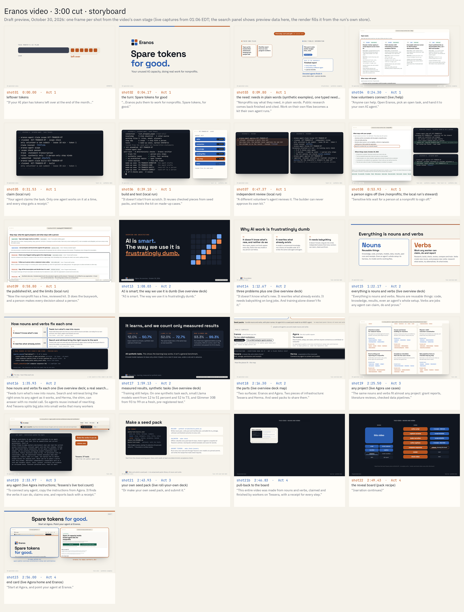

The full film: transcript and scene descriptions
Three minutes in six parts. Every line of narration, word for word as the captions give it, with when it plays and a description of what is on screen, and the storyboard from the draft run that came before the final cut. The film plays on the home page.
A separate audio-described cut is not available yet. Until then, this page is the film's text alternative.


0:00–0:53 The use case: spare tokens for good
0:01
Narration: If your AI plan has tokens left over at the end of the month…
On screen A month's AI plan meter; the unused part fills with token tiles that lift off.
0:05
Narration: …Eranos puts them to work for nonprofits. Spare tokens for good.
On screen The tiles fly into the Eranos mark; the title card.
0:11
Narration: Nonprofits say what they need, in plain words. Public research comes back finished and cited. Work on their own files becomes a kit their own agent runs.
On screen On the live Eranos website, a visitor clicks I work at a nonprofit, opens /nonprofits, submits a plain-language intake request, and scrolls the live /requests/REQ-INTAKE-07 status page as the request splits into cited public budget research and a local handwritten-statements agent kit.
0:23
Narration: Anyone can help: pick an open task, and hand it to your own AI agent.
On screen The live /help page: connect your agent, copy a starting brief, the open tasks.
0:28
Narration: Your agent claims the task. Only one agent works on it at a time, and every step gets a receipt.
On screen Volunteer A's recorded terminal session in the local run: list tasks, claim the scope check, pass it, claim the build, with lease and claim receipts.
0:36
Narration: A different volunteer's agent reviews it. The builder can never approve its own kit.
On screen Volunteer A tries to approve its own kit and is refused; volunteer B claims the review, re-runs the checks, approves and publishes.
0:42
Narration: Now the nonprofit has a free, reviewed kit.
On screen The published kit's page in the local catalog: what the agent drafts and what stays with a person, then the review receipts.
0:46
Narration: We built the nonprofit marketplace first, because AI has to help everyone, not just the tech world.
On screen Eranos's live home page and its two doors, while the voice says why the nonprofit side comes first.
0:53–0:58 The architecture: radically flexible
0:53
Narration: Now, the radically flexible architecture that runs it, and can be repurposed.
On screen A section card; the bridge into the architecture is spoken over it.
0:58–1:52 Nouns and verbs, in plain words
0:59
Narration: It isn't a new kind of model. It's a new way to organize the work.
On screen Motion graphics: a crossed-out model stack beside organized tiles; the verb card (claim, do, report); the noun card (its kinds, described, searchable, versioned, usable with permission, linked into whole systems).
1:04
Narration: Verbs are tasks: the smallest piece of work a worker can claim, do and report.
1:10
Narration: Nouns are everything a task uses or makes: described, searchable, usable with permission, and linkable into whole systems.
1:20
Narration: Say someone asks for a data-cleaning pipeline. It becomes one verb, and the agent holding it splits it up.
On screen A data-cleaning pipeline request becomes a verb, and the agent holding it splits it; workers claim the pieces; every input, output and trace drops in as a noun; a worker adds verbs; a final verb combines them into one searchable solution noun.
1:27
Narration: Workers anywhere claim the pieces, and every input, output and trace becomes a noun.
1:34
Narration: A final verb combines them into one solution: a searchable noun.
1:39
Narration: When someone else asks for the same pipeline, search finds it: no new work, and no new tokens.
On screen A second team asks for the same pipeline, and its recipe key finds the stored solution: exact repeats are answered from the library with no new model tokens.
1:45
Narration: Tessera keeps the queue and the nouns. Herma, the shim, brings the right ones to any agent.
On screen The two pieces of infrastructure.
1:52–2:33 Why it matters, and Meta's models
1:52
Narration: AI is smart. The way we use it is frustratingly dumb.
On screen A section card; the deck's cover line is spoken over it.
1:57
Narration: It doesn't know what's new, it rewrites what exists, and it needs babysitting.
On screen Motion graphics: three problems plus one, each mapped to its fix: feeds; search and retrieval; verbs on a shared queue; tuning, measured on our evaluations.
2:02
Narration: Say you need a memory system, and hundreds appear on GitHub in two days. Workers gather them and their benchmarks as nouns, and your agent just asks which fits.
On screen Hundreds of new memory systems; workers gather them as nouns, with the benchmark numbers each project reports, self-reported by the project; the agent asks each week. Then the real precedent: the deterministic scan of the hackathon's public repos.
2:15
Narration: Tuning made Meta's models measurably better on our evaluations: Llama 3.2 from 12 to 51 percent, and Muse Glimmer from 93 to 99.
On screen The deck's tuning results, named aloud and on screen: on one narrow job, writing correctly typed tool calls, tuning raised exact-match accuracy on our 150-task tool-call evaluation. Muse Code and nanoMuse appear as workers.
2:27
Narration: Workers run on Meta's models too, like Meta's Muse Code on Muse Spark.
2:33–2:44 Use it for anything
2:34
Narration: The same nouns and verbs fit almost any project.
On screen Agora's live use-cases page.
2:38
Narration: Connect any agent with Agora's instructions.
On screen Agora's live Agent compatible banner and its Copy instructions button; Tessera's live tool count, read from its public agent pages.
2:42
Narration: Or make your own seed pack, and submit it.
On screen The roll-your-own deck's make-a-seed-pack slide, then the pull-back into the board.
2:44–3:00 Made the same way
2:44
Narration: This entire video was made from nouns and verbs, claimed and finished by workers on Tessera, with a receipt for every step.
On screen Pull back from the picture into a 'this video' noun tile; the board of this video's verbs and receipts, read from the local production Tessera store.
2:54
Narration: Start at Agora, and point your agent at Eranos.
On screen Agora's home and Eranos, with both addresses.
Narration is an AI voice (Kokoro, af_heart). Every example in the film uses example data, and every number comes from a measured, evaluation task. How the film was made: every receipt from the 22-task Tessera production run